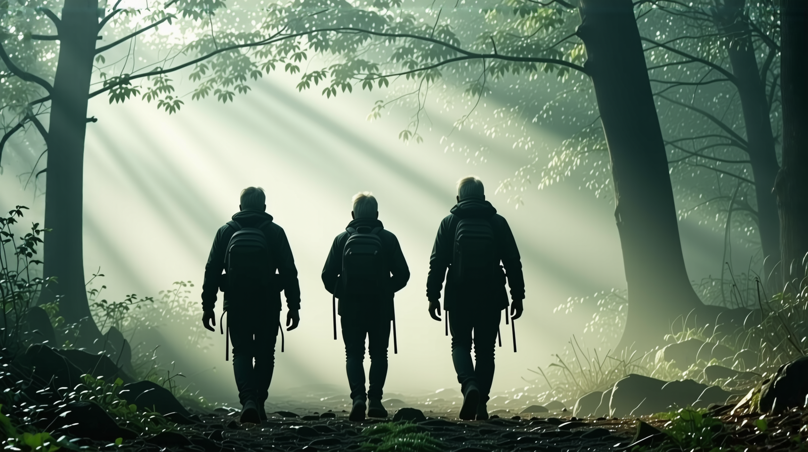
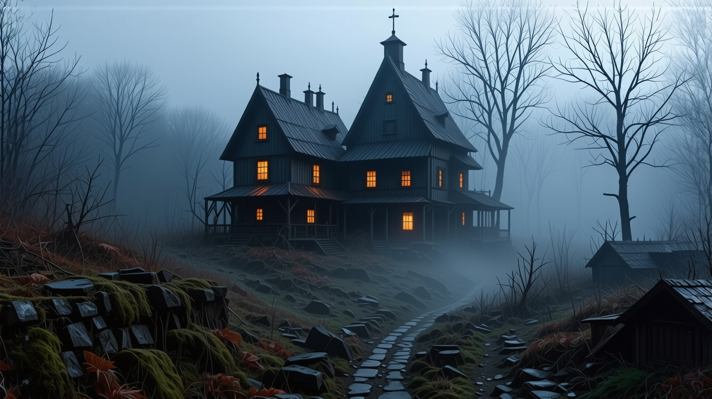

Исак и Итан последваха Елиас през гъстия храсталак, стъпките им заглъхваха върху дебелия килим от мъх, който покриваше земята. Пътеката напред изглеждаше да се извива и променя по неестествен начин, дърветата ставаха все по-близки, а светлината, която проникваше през короните, ставаше все по-слаба с всяка изминала минута. Чувството за дезориентация тежеше на тях, но те продължаваха, водени от мистериозните думи на човека.
„Не трябваше да идвате,“ беше казал Елиас по-рано, гласът му тежък и изпълнен с нещо тъмно — почти като предупреждение. „Тази гора не пуска лесно. Ще намерите това, което търсите, но трябва да сте готови да се изправите пред истината.“
Мислите на Исак се въртяха бързо. Той никога не беше човек, който да вярва в проклятия или суеверия, но нещо в това място — нещо, което го гризеше на ръба на увереността му. Той погледна към Итан, чийто млад образ беше осветен от смесица от страх и любопитство. Исак знаеше, че Итан го гледа с възхищение, но в този момент не беше сигурен дали има отговорите.
След няколко минути дърветата се разтвориха и разкриха поляна. В центъра на поляната стоеше странна гледка — едно изоставено село. Постройките бяха разрушени, покривите им се провисваха под тежестта на годините на занемаряване. Прозорците бяха разбити, вратите висяха от пантите си, а земята около селото беше превзета от диви плевели. Селото явно беше изоставено отдавна.
Елиас спря на ръба на поляната. „Това е,“ каза той. „Селото Авелден. Това беше процъфтяващо селище, но то беше изгубено във времето... и в гората.“
Исак се намръщи, оглеждайки развалините. „Какво се е случило тук?“ попита той с нисък глас.
„Проклятие,“ отговори Елиас мрачно. „Или може би нещо по-лошо. Гората го погълна, както погълна и тези, които са живели тук. Сега тя държи всички отговори, които търсите.“
Итан, който винаги беше оптимист, се огледа към селото. „Но ако разгадаем мистерията тук, можем да си тръгнем, нали?“
Елиас му хвърли бавен, почти съжалителен поглед. „Ако я разгадаете, да. Но не без цена.“
Исак обменя поглед с Итан и кимна. Нямаше избор, трябваше да продължат. Единственият начин да излязат беше през селото.
Селото беше тихо, прекалено тихо. Когато влязоха, въздухът се сгъсти от мириса на влага и разлагане. Исак водеше, внимателно стъпвайки по неравната земя. Те преминаха покрай една разпаднала се къща, чиято врата висяше свободно, разкривайки само сенки вътре. Вятърът шепнеше през развалините, клоните на дърветата скърцаха, като старци.
Спряха при един кладенец в центъра на селото. Каменната му структура беше покрита с лози, но все още изглеждаше необяснимо добре запазена в сравнение с околните сгради. Старо желязно ведро висяше несигурно от въжето на кладенеца, а в дъното се виждаше слаба искра на вода, макар и странна, почти прекалено чиста за нещо толкова забравено.
Елиас заговори отново. „Отговорите са тук, скрити на видно място. Но само тези, които са достойни, могат да ги отключат.“
Исак се наведе над кладенеца, изследвайки го. Имаше символ, изсечен в камъка, който не разпознаваше. Беше странна смесица от извити линии и остри ъгли, почти като комбинация от руна и карта. Когато прекара пръстите си върху символа, земята под тях леко загръмя, сякаш самото село се събуждаше.
„Виждал съм това преди,“ промълви Исак, изправяйки се. „У дома. На един стар камък близо до рида. Оставен знак от древни хора...“
Итан погледна символа с широко отворени очи. „Какво означава?“
„Не съм сигурен,“ отговори Исак. „Но мисля, че е указание.“
Изведнъж се чу силен скърцещ звук от една от близките къщи. Вратата на къщата се отвори бавно, сякаш ги канеше вътре.
Елиас кимна към къщата. „Пътят е вътре. Разгадайте неговата загадка и ще намерите своя път.“
Исак и Итан си размениха напрегнати погледи, но кимнаха едновременно. Нямаше как да се върнат назад сега.
Те тръгнаха към къщата, влизайки през скърцащата врата. Вътре беше тъмно, но имаше достатъчно светлина, проникваща през пукнатините в стените, за да се види. Подът беше покрит с прах, а стари мебели лежаха разпръснати по стаята. Но беше една картина на далечната стена, която привлече вниманието им.
Картината изобразяваше странна и зловеща сцена — пейзаж, много подобен на този, през който бяха преминали, но изкривен и изопачен. В предния план стоеше голямо дърво, чийто клони се извисяваха като нокти. Под него стоеше фигура, обвита в сенки, с лице, скрито от тъмнината. Тя държеше нещо в ръката си, нещо, което леко блестеше.
Исак внимателно разгледа картината. „Това е като карта,“ промълви той. „Но накъде води?“
Итан се приближи, пръстите му се докосваха до ръбовете на картината. „Погледни долу,“ каза той. „Там има нещо написано.“
Исак се напрегна, опитвайки се да разчете избледнелите думи. Те бяха стари, почти изгнили от времето, но той успя да разчете няколко букви: „Следвай дървото, отвъд завесата, където слънцето никога не залязва...“
Челото на Исак се намръщи. „Какво означава „където слънцето никога не залязва?“
Гласът на Елиас отговори отзад. „Слънцето не е залязвало тук отдавна, не откакто гората погълна това село. Времето е било задържано, хванато в завесата.“
Сърцето на Исак започна да бие по-бързо. Той осъзна тогава, че загадката не е само да намерят дървото — тя беше за счупването на самия цикъл на времето. Слънцето ще залезе само когато намерят пътя, когато разрешат последната загадка.
„Хайде,“ каза Исак, като решителност се прокрадваше в гласа му. „Трябва да намерим това дърво.“
Те напуснаха къщата и излязоха обратно в селото. Въздухът беше станал по-студен, а сенките изглеждаха да се протягат по-дълго, отколкото преди. Селото сега изглеждаше различно, сякаш ги наблюдаваше.
Те намериха дървото скоро — огромният му ствол се извисяваше над тях, клоните му се извиваха невъзможно към небето. Дървото беше древно, кората му беше груба и възлиста, а корените му се изправяха от земята като пръсти, издърпвайки земята.
Итан се наведе и докосна кората. „Това е то, нали? Дървото от картината?“
Исак кимна. „Това е мястото.“
Но точно когато се приготвяха да изследват по-задълбочено, земята отново затрепери, този път по-силно. Земята се разцепи под краката им, а студен вятър задуха от дълбините.
В отворената пукнатина те видяха тесен тунел, който водеше надолу в тъмнината.
„Това е,“ каза Елиас, отстъпвайки назад. „Пътят, който трябва да последвате.“
Исак пое дълбоко дъх. Те бяха стигнали толкова далеч. Сега трябваше да преминат през него.
С последен поглед към изоставеното село, Исак и Итан влязоха в тунела. Пътят напред беше несигурен, но нямаше избор. Тъмнината ги чакаше, а с нея и пещерата.